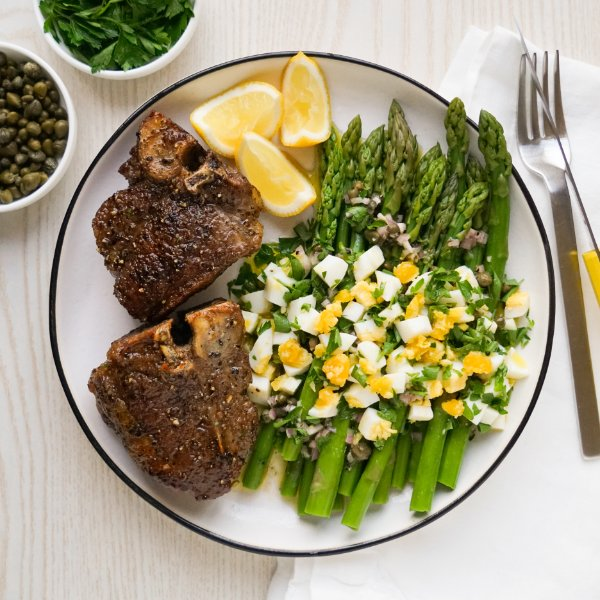

Seared Lamb Chops with French-Dressed Asparagus, Chopped Egg & Lemon

Total Time
40 min
Nutrition (Per Serving)
597.8 kcalCalories
41 gProtein
8.8 gCarbs
44.4 gFat
Full nutrition table
| Calories | 597.8 kcal |
| Total fat | 44.4 g |
| Saturated fat | 15 g |
| Trans fat | 1.2 g |
| Cholesterol | 294.3 mg |
| Sodium | 169.9 mg |
| Carbohydrates | 8.8 g |
| Fiber | 3.7 g |
| Sugars | 3.4 g |
| Protein | 41 g |
| Potassium | 784.2 mg |
| Calcium | 113.3 mg |
| Iron | 7.4 mg |
| Vitamin A | 1169.5 IU |
| Vitamin C | 32.2 mg |
| Vitamin D | 38.9 IU |
Cookware
Ingredients
- 2 small bunchesasparagus
- 2 tbspcapers
- 4eggs
- 1 small bunchItalian (flat-leaf) parsley
- 8lamb loin chops
- 1lemon
- 1shallot
- black pepper
- Dijon mustard
- extra virgin olive oil
- salt
- white wine vinegar
Steps
- Fill a large pot about halfway with hot water (from the tap); cover with a lid and bring to a boil over high heat.
- Meanwhile, wash and dry the fresh produce.2 small bunches asparagus
1 small bunch Italian (flat-leaf) parsley
1 lemon - Snap (or cut) off woody ends of the asparagus.
- Once the water in the pot is boiling, add asparagus and salt; cook until tender-crisp, 2-3 minutes. Using a slotted spoon, transfer asparagus to the colander, and run under cold water to cool; transfer to a plate and set aside. (Reserve boiling water in pot for the next step.)½ tsp salt
- Carefully add eggs to the reserved pot, reduce heat to a simmer and cook for 10 minutes. Drain hot water and add ice or run under cold water to cool; set aside.4 eggs
- Meanwhile, peel and mince shallot. Place in a small bowl.1 shallot
- Shave parsley leaves off the stems; discard stems and mince the leaves. Add half to the bowl with the shallot. (Reserve remaining parsley for serving.)
- Add capers, oil, vinegar, Dijon, salt, and pepper to the bowl. Stir to combine the dressing and set aside.2 tbsp capers
2 tbsp extra virgin olive oil
2 tsp white wine vinegar
1 tsp Dijon mustard
½ tsp salt
½ tsp black pepper - Preheat a large skillet over medium-high heat.
- While the skillet heats up, pat the lamb chops dry with paper towels and place on another plate; season with salt and pepper on both sides.8 lamb loin chops
1 tsp salt
1 tsp black pepper - Once the skillet is hot, add oil and swirl to coat the bottom. Add chops and pan-fry until lamb is golden brown and cooked through, about 3 minutes per side. Remove to a clean plate and set aside to rest.4 tsp extra virgin olive oil
- Meanwhile, cut lemon into wedges and set aside for serving.
- Peel and roughly chop the eggs. Season with salt.⅛ tsp salt
- Divide lamb and asparagus between plates. Top asparagus with dressing, chopped egg, and reserved parsley. Serve with lemon wedges for squeezing and enjoy!